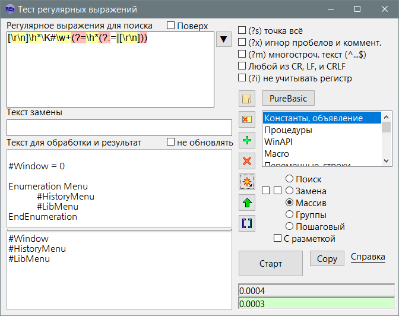

RegExp
Назначение
Тест регулярных выражений.

Взаимосвязанные
RegExp
Синтаксис регулярных выражений
Описание
Кнопка Старт
Выполняет поиск/замену и т.д. с помощью регулярного выражения
Библиотека
При запуске программа проверяет файлы в папке "Library" и добавляет их в список библиотек. Библиотека содержит регулярные выражения, флаги и текст обработки. Содержимое библиотеки отображается в правой части окна. Клик на элементе библиотеки вставляет данные в поля. Две кнопки (Добавить и Удалить) предназначены для добавления (перезаписи) и удаления пунктов. По умолчанию используется имя выбранного пункта, что позволяет перезаписать, т.е. обновить данные пункта. Если надо добавить новый, то указать новое имя пункта. Библиотека позволяет не потерять важные регулярные выражения и всегда иметь к ним доступ.
Вывод результата
Результат выводится в нижнее слева окно. Результат зависит от режима поиска. Это может быть текстом найдено-ненайдено или результатом замены или списком элементов, а также предупреждением об ошибке в регулярном выражении на англ. языке.
Режимы
- Поиск - возвращает "Найдено" или "Не найдено".
- Замена - возвращает текст, в котором выполнена замена.
Рядом имеются две галки: поддержка Unescape-символов (\r\n\t) и поддержка групп (\1...\9).
- Массив - возвращает целиком найденные элементы соответствующие регулярному выражению.
- Группы - возвращает элементы регулярного выражения находящиеся в скобках.
- Пошаговый - возвращает позицию, длину и найденный текст регулярного выражения.
Флаг "С разметкой" позволяет сделать вывод результатов более наглядным, с номерами найденных элементов.
Скорость выполнения
Под кнопкой "Старт" есть два поля. Нижнее показывает время выполнения текущего регулярного выражения на текущем тексте. Верхнее - время предыдущего теста. Это необходимо для сравнения скорости. Если текущий тест выполнен быстрее предыдущего, то нижнее поле подсвечивается зелёным цветом, иначе красным.
Стиль оформления
В ini можно задать цвет элементов окна и цвет подсветки метасимволов в поле регулярного выражения. Стиль выбирается так: style=style1, при этом в ini-файле должна быть секция [style1] с настройками цвета. Для примера ini-файл содержит несколько готовых стилей.
Вставка метасимволов
Некоторые комбинации можно вставить с помощью кнопки "звёздочка" - "*", меню которого можно сделать самостоятельно в Menu.ini.
История
Кнопка истории сохраняет 30 элементов последнего использования регулярных выражений. Регулируется параметром maxhistor=30.
Командная строка
В качестве инструмента в PureBasic можно добавить с ком-строкой:
-l:PureBasic -nu -i:4 "%TEMPFILE"
Здесь ключи имеют следующее значение:
-l:PureBasic - выбор библиотеки
-nu - не обновлять (или заморозить обрабатываемый текст, чтобы не изменялось при нажатии других пунктов)
-i:4 - выбор 4-го пункта, отсчёт от 0. Параметр обязательно должен быть после ключа -l: иначе отработает когда библиотека не открыта
"%TEMPFILE" путь в кавычках открываемого файла в окно обрабатываемого текста.
Данный функционал позволяет автоматически открывать RegExpPB с нужными настройками и искать или обрабатывать исходник с помощью регулярных выражений.
Флаги
OnTop - короткое название "Поверх всех окон"
Не обновлять - при вставки из библиотеки не заменяется текст для обработки. Допустим нужно обрабатывать свой текст разными регулярными выражениями.
Также 5 включаемых флагов, которые можно включать в самом регулярном выражении методом (?s) и т.д.
Кнопки
 Открыть - Открыть текстовый файл для обработки.
Открыть - Открыть текстовый файл для обработки.- Очистить - Очищает 4 поля ввода.
 Добавить - Добавить семпл в библиотеку.
Добавить - Добавить семпл в библиотеку. Удалить - Удалить выбранный пункт библиотеки.
Удалить - Удалить выбранный пункт библиотеки.- Метасимволы - выбор готовых комбинаций для вставки в шаблон регулярного выражения.
- Переместить вверх - Перемещает текст из результатов в окно для обработки. Полезно если некий текст надо прогнать через десяток регулярных выражений. После каждого применения нажимать кнопку, чтобы перемещать обработанный текст в результатах наверх для обработки следующим регулярным выражением.
- Показать диапазон - тест диапазонов полезен для новичков.
- Copy - копирует в буфер обмена готовую конструкцию для вставки в код. Для этого в папке "template" есть одноимённые готовые шаблоны, в которых переменные подменяются соответствующими полями. Чтобы программа была универсальна есть параметр copysel=0, если поменять его на copysel=1, то вместо использования одноименных шаблонов откроется папка с возможностью выбора файла-шаблона, таким образом можно даже для одного режима сделать несколько шаблонов, не говоря уже о разных языках программирования.
Описание ini-файла
[Set] - секция основных параметров
width = 800 - ширина окна
height = 600 - высота окна
fontsize = 11 - размер шрифта
maxhistor = 30 - максимальное число пунктов истории
topmost = 0 - поверх всех окно
lastlib = PureBasic - последняя библиотека, выбираемая при запуске программы
copysel = 0 - Флаг переключения выбора шаблона методом открытия файла
style = style1 - выбор секции стиля
[regexp] - история регулярных выражений
1 = [А-Яа-яЁё]+ - один из элементов истории
2 = (\r\n|\r|\n){2,}
[style1] - секция стиля
gui = f - цвет окна (только Windows)
gadget = f - цвет гаджетов (поле ввода) (только Windows)
gadgetfont = f - цвет шрифта (тексты окна, чекбоксы, надписи) (только Windows)
type = 1 - тип цвета, фон или шрифт (для регулярных выражений)
background = f - цвет фона
default = 0 - цвет шрифта
select_bg = f99 - цвет фона выделенного текста
select_fnt = 0 - цвет шрифта выделенного текста
caret = 0 - цвет курсора
re_Repeat = BFFFBD - цвет повтора {n,m}
re_SqBrackets = BDF7FF - цвет квадратных скобок []
re_RndBrackets = FFBDBD - цвет круглых скобок ()
re_AnyText = E6DDFF - цвет любого текста .*?
re_Meta = FFFFA5 - цвет метасимволов \w и т.д.
re_Borders = FFDFA5 - цвет границ \A \b и т.д.
re_ChrH = FFC1F7 - цвет кода символа \x01 \x{01}
Цвет может быть задан упрощённо, например "F" означает "FFFFFF", "3F" = "3F3F3F", "F95" = ""FF9955"